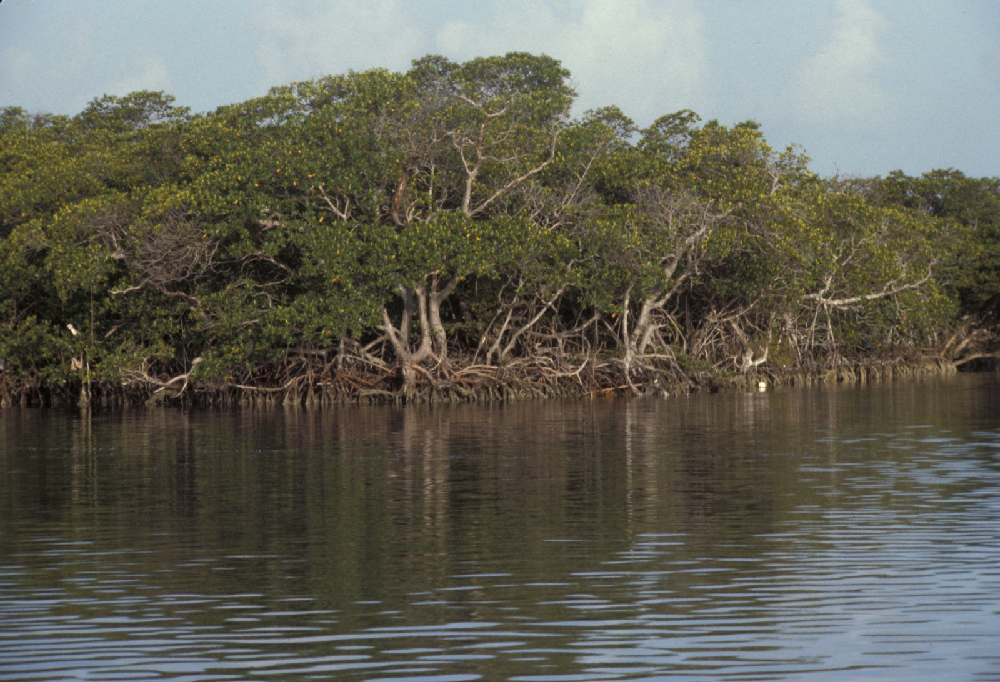

Un bureau d’étude, de conseil et de recherche appliquée spécialisé dans les territoires côtiers, l'environnement, les dynamiques maritimes et l'économie bleue territoriale.
À propos
Un bureau d’étude, de conseil et de recherche appliquée au service des territoires côtiers et maritimes.
BlueWave Solutions intervient auprès des collectivités, établissements publics, institutions, entreprises, organisations, partenaires techniques et porteurs de projets pour produire des analyses utiles à la décision, structurer la compréhension des contextes et accompagner des démarches territoriales, environnementales, côtières et maritimes, sans se substituer aux maîtrises d’ouvrage, bureaux techniques spécialisés ou conseils juridiques.
Le cabinet
Une lecture croisée des contextes institutionnels, territoriaux, environnementaux et maritimes au service de l'action.
BlueWave Solutions s'est construit autour d'une conviction simple : les enjeux liés au littoral, à l'environnement, à l'aménagement du territoire, à la gestion côtière et aux dynamiques maritimes ne peuvent être traités de manière isolée. Ils appellent des lectures situées, capables de relier espaces, usages, ressources, gouvernance littorale, concertation territoriale et trajectoires de développement.
Le cabinet privilégie une posture de travail rigoureuse, lisible et directement utile à la décision publique, partenariale ou opérationnelle. Les missions associent étude, conseil et recherche appliquée, avec une attention particulière portée aux vulnérabilités côtières, aux interfaces terre-mer, aux cadres d'action institutionnels, à l’économie bleue territoriale et à la cohérence de l'action territoriale.

Éclairer la décision, appuyer la gouvernance, produire de la connaissance utile à l'action et accompagner la structuration des démarches et des projets.
Des environnements multi-acteurs où se croisent décision publique, action partenariale, enjeux environnementaux, territoires littoraux et espaces maritimes.
Lire les contextes
Comprendre les territoires, les cadres institutionnels, les dynamiques d'acteurs, les vulnérabilités et les équilibres d'usage qui structurent l'action.
Produire des connaissances utiles
Transformer les données, observations et analyses en diagnostics, repères stratégiques et contenus mobilisables dans la décision et la conduite des projets.
Relier acteurs et action
Faciliter la coordination, la maturation des projets et l'articulation entre gouvernance, territoire, environnement et dynamiques maritimes.
Repères institutionnels et expériences valorisables
Des repères structurants en lien avec la gouvernance maritime, la gestion côtière, la recherche appliquée et l'économie bleue.
BlueWave Solutions s'appuie sur des expériences, participations et cadres de référence en lien avec les espaces littoraux et maritimes, les politiques publiques, la gouvernance côtière, la recherche appliquée et les dynamiques territoriales en Afrique de l'Ouest et en Méditerranée.
Gouvernance maritime en Afrique de l'Ouest
Participation aux side events du Sommet extraordinaire de Lomé, repère structurant pour la gouvernance maritime africaine contemporaine et la Charte de Lomé. Cet ancrage éclaire les enjeux de sécurité maritime, de politiques publiques et de coopération régionale.
Gestion côtière et cadres régionaux ouest-africains
Participation à des cadres de travail liés à la gestion de l'environnement côtier en Côte d'Ivoire, aux dynamiques WACA et à la Convention d'Abidjan. Cet ensemble renforce l'ancrage du cabinet sur les vulnérabilités côtières, l'adaptation et la gouvernance intégrée du littoral.
Cadres spécialisés en Méditerranée
Participation à deux colloques organisés par l'INDEMER à Monaco, consacrés à la protection du milieu marin et aux usages contemporains de la mer, ainsi qu'à des réseaux récents liés à l'économie bleue et aux coopérations scientifiques et institutionnelles en Méditerranée.
Recherche appliquée sur les AMP et le climat
Conduite d'un stage de recherche AMIDEX dans le cadre du projet PROTEUS à Aix-Marseille Université, consacré aux Aires Marines Protégées et au changement climatique. Ce repère renforce l'articulation entre recherche appliquée, résilience côtière et aide à la décision.
Droit de la mer et gouvernance océanique
Parcours renforcé par des formations spécialisées en droit de la mer, sécurité maritime, pollution côtière, politiques des pêches et systèmes océaniques, ainsi que par une expérience au Tribunal international du droit de la mer à Hambourg.
Trajectoire entre Afrique de l'Ouest et Méditerranée
L'ensemble de ces repères nourrit une pratique située de l'étude, du conseil et de la recherche appliquée, à l'interface des territoires, des cadres institutionnels, des espaces côtiers et des dynamiques maritimes.
Commanditaires et partenaires accompagnés
Une capacité d'intervention adaptée à une diversité d'acteurs publics, privés, institutionnels, académiques et partenariaux.
BlueWave Solutions accompagne des acteurs intervenant sur des enjeux territoriaux, environnementaux, côtiers et maritimes. Le cabinet peut être sollicité à différents stades d'une réflexion, d'une étude, d'un projet ou d'une démarche de gouvernance, selon la nature du besoin et le contexte d'intervention.
Collectivités et établissements publics
Communes, intercommunalités, agences, structures de planification et acteurs publics engagés dans des démarches d'aménagement, de gestion, de planification ou de développement territorial.
Institutions nationales, locales et organismes publics
Administrations, directions techniques, services déconcentrés, organismes publics, autorités sectorielles et cadres institutionnels impliqués dans des enjeux liés au littoral, à l'environnement, à la mer et aux territoires.
Entreprises, opérateurs et porteurs de projets
Entreprises, opérateurs économiques, promoteurs, investisseurs, consortiums et porteurs de projets souhaitant mieux comprendre leur contexte d'intervention, structurer une démarche ou renforcer la lisibilité d'un projet.
Organisations, associations, ONG et partenaires techniques
Organisations de développement, ONG, associations, réseaux, dispositifs d'appui et partenaires techniques mobilisés sur des enjeux de gouvernance, d'environnement, de gestion côtière, d'économie bleue ou de développement territorial.
Bailleurs, programmes et cadres de coopération
Programmes de coopération, initiatives multi-acteurs, dispositifs financés, partenaires institutionnels ou bailleurs intervenant dans des projets nécessitant une lecture territoriale, environnementale, stratégique ou maritime.
Établissements d'enseignement et organismes de formation
Universités, écoles, instituts spécialisés, organismes de formation et dispositifs de renforcement de capacités pouvant solliciter BlueWave Solutions pour des interventions, contributions, formations ciblées, sensibilisations ou productions de connaissances.
Méthodologie
Une démarche structurée au service d'analyses solides, de décisions mieux fondées et de projets plus lisibles.
Cadrage et compréhension du besoin
Clarification des objectifs, du périmètre, des attentes des parties prenantes et des enjeux institutionnels, territoriaux, environnementaux, côtiers ou maritimes.
Analyse et production de connaissance
Collecte des informations utiles, lecture documentaire, analyse contextuelle, observations de terrain et mise en perspective des données nécessaires à la décision.
Recommandations et accompagnement
Formulation de diagnostics, repères d'aide à la décision, orientations stratégiques ou cadres d'action avec une attention portée à leur faisabilité et à leur inscription territoriale.
Ce que nous apportons
Un appui structuré pour des projets qui requièrent finesse d'analyse, profondeur territoriale et clarté décisionnelle.
Au-delà des productions elles-mêmes, BlueWave Solutions apporte un cadre de travail, une capacité de mise en perspective et une qualité de formalisation utiles aux commanditaires, aux partenaires et aux territoires concernés.
Des analyses situées
Des diagnostics argumentés fondés sur les données disponibles, la compréhension du terrain, les usages, les vulnérabilités et les jeux d'acteurs.
Une capacité d’articulation
Un travail d'interface entre territoires, environnement, gouvernance et dynamiques maritimes pour rendre les démarches plus cohérentes et plus lisibles.
Un appui lisible à la décision
Des contenus conçus pour être partagés, arbitrés et mobilisés dans les projets, les politiques publiques, la gouvernance et les coopérations partenariales.
Contact